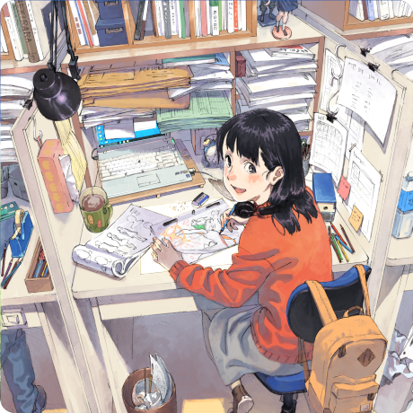
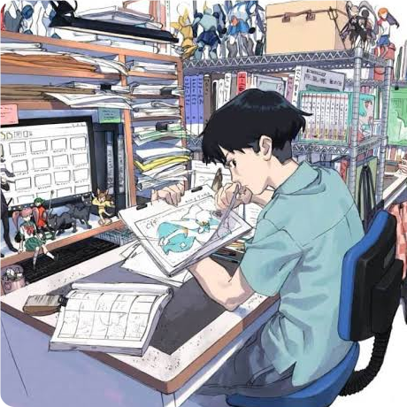
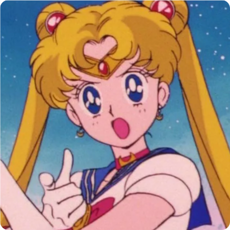
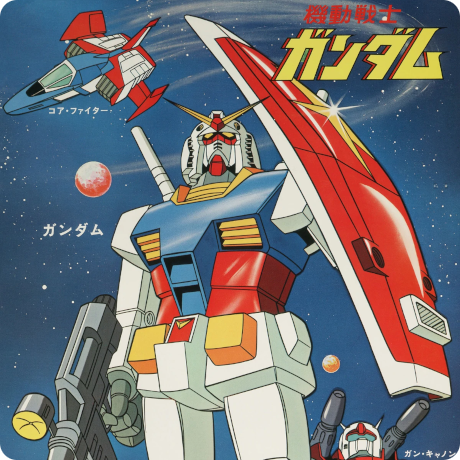
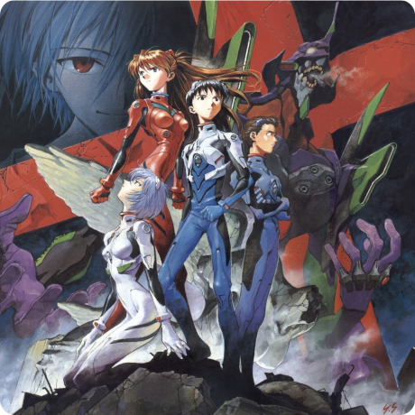
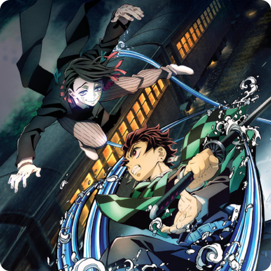

Mówiąc w skrócie
Historia anime sięga początków XX wieku, kiedy to japońscy twórcy filmowi eksperymentowali z technikami animacji znanymi na Zachodzie. W latach 70. anime rozwinęło się, zrywając ze swoimi zachodnimi korzeniami. Powstały wtedy nowe, specyficzne gatunki, chociażby mecha. W latach 80. anime zostało uznane za główny nurtem filmowym w Japonii, zrodził się wtedy boom na tego typu produkcje. Na początku tej dekady rozpoczęto produkcję Gundam, rozpoczęła się też kariera Rumiko Takahashi. W 1988 roku Akira ustanowił rekord kosztów produkcji anime – wyniósł on ponad miliard jenów. Lata 90. i początek XXI wieku to wzrost popularności anime na zagranicznych rynkach.Akira i Ghost in the Shell z 1995 roku stają się znane na całym świecie, a serial Dragon Ball Z odnosi ogólnoświatowy sukces. Inne serie, jak Neon Genesis Evangelion i Cowboy Bebop, stają się popularne w Japonii, ale zostają też zauważone na Zachodzie. W 2002 roku Spirited Away: W krainie bogów (Sen to Chihiro no kamikakushi) wygrywa pierwszą nagrodę na Międzynarodowym Festiwalu Filmowym w Berlinie, a w 2003 roku otrzymuje Oscara za najlepszy film animowany (było to jak dotąd pierwsze i ostatnie anime, które otrzymało tę nagrodę; kilka lat później nominowano także Ruchomy zamek Hauru, ale przegrał on z Wallace'em i Grommitem: Klątwą królika).


Początki filmu animowanego w Japonii
Za pierwszy powstały film w Japonii uznaje się odkryty w 2005 roku w Kioto fragment przezrocza nieznanego twórcy, składającego się z 4 sekund materiału, na którym chłopiec pisze na ścianie słowa ruchome obrazy (jap. 活動写真 Katsudō shashin) (tak określano wówczas filmy), a następnie ściąga czapkę w geście powitania. Specjaliści w dziedzinie historii animacji, a także odkrywca tego filmu, profesor Matsumoto Natsuki, oceniają, że film powstał w 1907 roku. Pionierami japońskiego filmu animowanego byli Ōten Shimokawa (jap. 下川凹天 Shimokawa Ōten), Jun'ichi Kōuchi (jap. 幸内純一 Kōuchi Jun'ichi, którzy swoje pierwsze prace zaprezentowali w 1917 roku. W 1916 roku Tennenshoku katsudō shashin (jap. 天然色活動写真) zatrudniło Ōtena Shimokawę do stworzenia animowanego filmu krótkometrażowego. Shimokawa eksperymentował z kilkoma różnymi technikami i ostatecznie stworzył 5-minutowy film animowany zatytułowany Imokawa Mukuzō genkanban no maki (jap. 芋川椋三玄関番の巻 Opowieść o odźwiernym Mukuzō Imokawie), który został rozdystrybuowany w styczniu 1917 roku jako pierwszy japoński film animowany. Przez długi czas film ten uznawany był za pierwszy w swojej kategorii. Drugi z pionierów, Jun'ichi Kōuchi, ilustrator komiksów i przyjaciel Shimokawy, został z kolei zatrudniony w lutym 1917 roku przez studio Kobayashi shōkai (jap. 小林商会) do stworzenia filmu animowanego. 30 czerwca 1917 miał premierę jego pierwszy film, zatytułowany Hanawa Hekonai meitō no maki (jap. 塙凹内名刀之巻 Opowieść o słynnym mieczu Hekonaia Hanawy), który znany jest także pod tytułem Namakuragatana (jap. なまくら刀 Tępy miecz).
Katsudō shashin
Namakuragatana
Toei Animation i Mushi Productions
W 1948 roku założono studio Toei Animation (Toei Animēshon), będące producentem pierwszego kolorowego anime – Pandy i magicznego węża (Hakuja den) w 1958 roku. Był to film bardziej w stylu Disneya niż współczesnego anime. Toei produkowało disneyopodobne produkcje do wczesnych lat 70. Z owego studia wyszły też dwa doskonale znane na całym świecie tytuły: Dragon Ball (Doragon bōru) – trzy serie, pierwsza w 1986 roku, i Czarodziejka z Księżyca (Bishōjo senshi sērā mūn) – kilka serii, pierwsza w roku 1992. Styl Toei był różny, ponieważ każdy z animatorów wnosił do produkcji swoje pomysły. Najbardziej ekstremalnym tego przykładem jest Taiyō no ōji: Horusu no daibōken (tłum. Horusu – książę słońca) Isao Takahaty z 1968 roku. Horusu często uważany jest za pierwszy film łamiący styl anime oraz prekursora późniejszego gatunku, zwanego jako anime progresywne. W podobnym kierunku poszli tacy reżyserzy jak Hayao Miyazaki czy Mamoru Oshii. Osamu Tezuka założył konkurencyjne dla Toei studio, Mushi Productions (Mushi Purodakushon). Pierwszy hit studia, Tetsuwan Atomu z 1963 roku, był zarazem pierwszym popularnym serialem anime. Wbrew powszechnemu przekonaniu, Tetsuwan Atomu nie był pierwszym serialem anime emitowanym w Japonii – było nim Manga Calendar, którego emisję rozpoczęto w 1962. Tetsuwan Atomu był jednak pierwszym, w którym ci sami bohaterowie pojawiali się w kolejnych odcinkach, tworzących ciągłą fabułę. Amerykańska telewizja, nadal będąca w powijakach i szukająca nowego programu, w 1964 roku przerobiła i zaadaptowała ów serial dla potrzeb rynku amerykańskiego, nadając mu tytuł Astro Boy. Popularność Tetsuwan Atomu w Japonii stała się kluczem do stworzenia kolejnych seriali anime.


Lata 70.
W latach 70. rynek filmowy w Japonii został osłabiony, ponieważ pojawił się poważny dla niego konkurent – telewizja. Toei powoli zaprzestawało tworzenia anime w disneyowskim stylu, skupiając się przede wszystkim na serialach. Mushi zbankrutowało, a animatorzy przeszli do innych studiów, jak Madhouse (Maddohaus) i Sunrise (Sanraizu). Te dwa fakty spowodowały, że wielu młodych animatorów, niemających jeszcze odpowiedniego doświadczenia, zajmowało stanowiska reżyserskie. Ten zastrzyk młodych talentów zaowocował eksperymentowaniem na szerszą niż dotychczas skalę. Przykładem owych eksperymentów jest serial Isao Takahaty Heidi (Arupusu no shōji Haiji) z 1974 roku. Pierwotnie serial dobrze się sprzedawał, był realistycznym dramatem dla dzieci. Większość zarządów stacji telewizyjnych była przekonana, że serial ten nie odniesie sukcesu, ponieważ trzeba czegoś bardziej fantastycznego, aby przyciągnąć dzieci. Heidi okazała się jednak międzynarodowym sukcesem, stając się popularna w wielu europejskich krajach. Serial emitowany był także w Polsce. W Japonii serial odniósł tak wielki sukces, że pozwolił jego twórcom – Takahacie i Miyazakiemu – stworzyć projekt zatytułowany Sekai meisaku gekijō, adaptujący książki. Chociaż Takahata i Miyazaki opuścili go w późnych latach 70., seriale powstawały do połowy 90. W tym czasie powstał gatunek mecha.
Lata 80. i 90. XX wieku
W latach 80. anime zaczęło przechodzić „odnowę jakości wizualnej” dzięki nowym reżyserom, takim jak Hayao Miyazaki, który założył Studio Ghibli w 1985 roku, czy Isao Takahata i Katsuhiro Ōtomo.
W 1995 roku premierę miała seria Neon Genesis Evangelion autorstwa Hideakiego Anno, który jest mieszanką fantastyki naukowej, wątków psychologicznych filozoficznych i religijnych. Produkcja odniosła komercyjny sukces (zarobiła 400 milionów dolarów w ciągu pierwszych dwóch lat od wydania na VHS) i zrewolucjonizowała wiele aspektów w branży anime i filmowej jakotakiej. Ogromne zaangażowanie Anno w proces produkcji serii i jego sukces zachęcił studia do dania twórcom animacji większej swobody i kontroli przy tworzeniu serii, którą wcześniej w dużej mierze była w rękach komitetu produkcyjnego. W rezultacie powstały takie serie jak Cowboy Bebop czy The Big O, które również odniosły międzynarodowy sukces. Producenci zaczęli inwestować w mniejszą ilość odcinków na rzecz poprawienia ich jakości, prowadząc do stworzenia formatu 13- i 26-odcinkowego, który stanowi od tego czasu standard w przemyśle animowanym w Japonii. Wykorzystanie symbolizmu w serii zamiast typowego dla wcześniejszych produkcji bezpośredniego przedstawiania elementów fabuły zachęciło do przedstawiania coraz bardziej abstrakcyjnych elementów w późniejszych produkcjach, takich jak Wirtualna Lain czy Rewolucjonistka Utena. Neon Genesis Evangelion wpłynął także na rozpowszechnienie się archetypów postaci, które starano się imitować w późniejszych produkcjach. Typ tsundere reprezentowany w serii przez Asukę Langley znalazł później odwzorowanie w takich seriach jak Naruto (Sakura), Ognistooka Shana (Shana) czy Zero no Tsukaima (Louise). Typ kūdere, reprezentowany w serii przez Rei Ayanami, zainspirował później twórców takich anime jak Eureka Seven (Eureka). Inną serią z 1995 roku, która odbiła się szerokim echem w branży anime i stanowiła później inspirację dla wielu twórców filmowych był cyberpunkowy thriller Ghost in the Shell Mamoru Oshii. Inspirację z tej produkcji czerpali później tacy twórcy jak rodzeństwo Wachowskich przy tworzeniu Matrixa, James Cameron przy tworzeniu Avatara czy Steven Spielberg przy A.I. Sztuczna inteligencja, a także wpłynąła ona na takie gry jak Metal Gear Solid, Deus Ex czy Cyberpunk 2077. W 1997 roku premierę miał film zatytułowany Księżniczka Mononoke, za którego reżyserię odpowiadał Hayao Miyazaki. Jego produkcja kosztowała 23,5 miliona dolarów stając się najdroższą produkcją filmu anime, i uplasowując się w czołówce najdłuższych filmów animowanych zawierając 144 tysiące klatek i trwając 136 minut. Film ten ustanowił także rekord w japońskim box office, zarabiając 20,18 miliarda jenów i nawet po 25 latach od premiery nadal zajmuje miejsce w pierwszej dziesiątce najlepiej zarabiających filmów w Japonii wszech czasów.


Lata 2000-2019
Według Nippon dōga kyōkai łączne zyski ze sprzedaży zagranicznej firm zajmujących się animacją i materiałami licencjonowanymi z nią związanymi, takich jak np. zabawki wzrosło z 2,3 miliarda w 2012 roku do 10 miliardów w 2018 roku i stanowiło prawie połowę całkowitego dochodu tej gałęzi przemysłu.
Od 2020
W trakcie pandemii koronawirusa popularność anime gwałtownie wzrosła na całym świecie, przede wszystkim dzięki dużej dostępności takich treści za pośrednictwem platform streamingowych. Przedstawiciele Netflixa podali do wiadomości, że w okresie od stycznia do września 2020 za pośrednictwem ich platformy na całym świecie ponad 100 milionów kont obejrzało przynajmniej jeden tytuł z kategorii anime, co stanowi 50% wzrost oglądalności tej kategorii w stosunku do całego roku 2019. Ponadto produkcje z tej kategorii zajmowały w serwisie miejsca w pierwszej dziesiątce najchętniej oglądanych w prawie 100 krajach świata. Ponadto, jak pokazały zeznania finansowe japońskiego studia Toei Animation, w roku finansowym trwającym od kwietnia 2019 do marca 2020 przychód firmy w połowie pochodził z zagranicy; porównując do zeznania opublikowanego cztery lata wcześniej zyski ze sprzedaży animacji studia poza granicami Japonii wynosiły tylko 1/3 całkowitego przychodu firmy. Ponadto przychody z zagranicy wzrosły ponad dwukrotnie do równowartości 243 milionów dolarów. Takie tytuły jak Gekijōban Kimetsu no yaiba: Mugen ressha-hen, film pełnometrażowy z serii Miecz zabójcy demonów – Kimetsu no Yaiba, stał się nie tylko najczęściej oglądanym filmem w japońskim box office w roku 2020 zarabiając 36,55 miliarda jen, ale także najchętniej oglądanym filmem wszech czasów w Japonii, zarabiając ostatenie ponad 40 miliardów jen w Japonii. Stał się także najszybciej zarabiającym filmem w Japonii wszech czasów zarabiając 10 mld jenów w ciągu 10 dni; poprzedni rekord należał do innego filmu anime, Spirited Away: W krainie bogów, który dokonał tego w 25 dni.